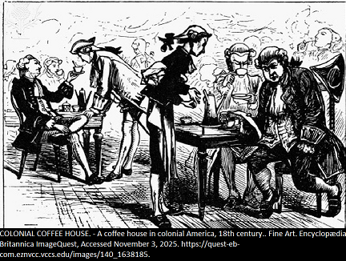

Entry V — The Coffeehouse Enlightenment
London, 1799
Back in London after being away for ages, the place still unchanged, but somehow felt different deep down. Those cafés? They are full of people, talk, and sharp jokes flying around. Stepped into one near Fleet Street today, pulled in by the heat and the smell of fresh roast. Once inside, traders, students, press guys, even scribblers were crammed together, voices clashing while someone cracked up nearby. It struck me that even in such tight spaces, more thinking gets done than inside fancy halls.
Over at the biggest table, Dr. Samuel Johnson took up space, and people gathered close around him. Loud and steady, his tone cut through the noise. Right then, he was giving Langton an earful about handing property to sisters instead of some far-off cousin just 'cause he’s got Y chromosomes. “Three frumpy women!” Johnson roared, slamming his palm down so hard that teacups did a little dance. “Land this old? Should stay in the hands of men.”! Give your fresh cash to a pup if that’s your thing, yet dirt should stay where it fits! The place trembled with chuckles. Some didn’t buy his take, still they smirked anyway.
Looking at him, I saw something real, not some ideal from a lecture or text, but raw truth in motion. This wasn’t just a talk, it was a mind meeting with old ways bumping against new, sense wrestling nonsense. Sure, Johnson backed outdated power lines, still the fact that people gathered freely, argued loudly over cheap drinks, was enlightened in many ways. Tonight, the coffeehouse turned into a spectacle; it made knowledge feel social.
These days, I see chasing perfect logic as a form of naivety. Reason isn’t a single flame; it's many. One's either rage wildly or glow gently over time. One might flare into violence, another grows slowly through faith; some push reform, while others lead to calm talk. Perhaps what I really needed didn't come from order, but from the mess of it all.

Primary Source: James Boswell, Life of Johnson, 1799. Secondary Source: Ellis, “Coffee-House Libraries in Mid-Eighteenth-Century London,” 2009.